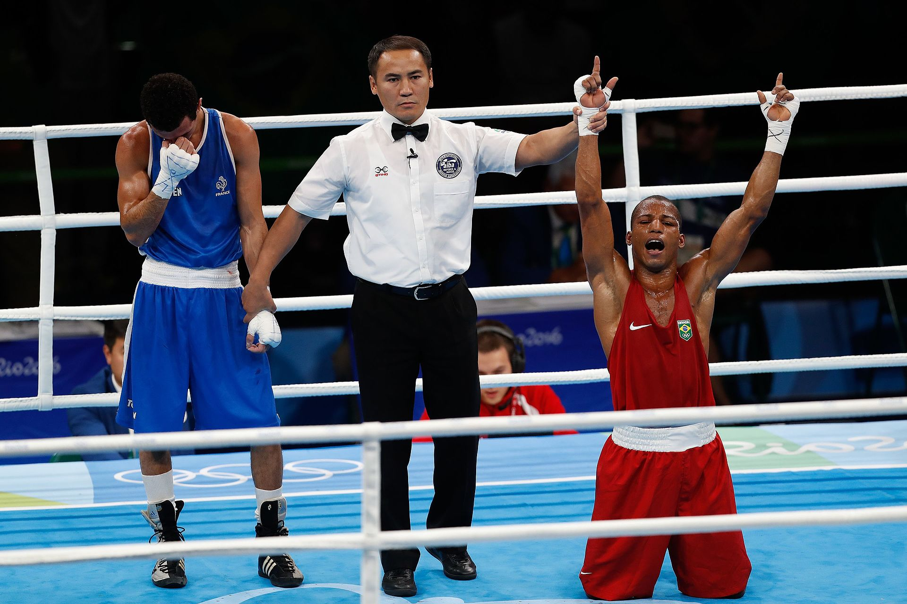

Robson Conceição terá mais uma oportunidade de ampliar seu lugar na história do boxe brasileiro. No sábado, 1º de agosto de 2026, o baiano enfrenta o norte-americano Raymond Muratalla pelo título mundial dos pesos-leves da Federação Internacional de Boxe, a IBF, em Las Vegas.
O combate será realizado no The Theater at Virgin Hotels Las Vegas e ocupará a posição de atração co-principal de um card inteiramente voltado para a elite da divisão até 61,2 quilos. Na luta principal, Lamont Roach Jr. e William Zepeda disputarão o cinturão vago dos leves do Conselho Mundial de Boxe, o WBC.
Para Robson, o desafio representa a possibilidade de conquistar um título mundial em uma segunda categoria. Campeão do WBC entre os superpenas em 2024, o brasileiro agora sobe ao peso-leve para enfrentar um adversário invicto, mais jovem e estabelecido entre os principais nomes da divisão.
Uma nova chance mundial
Aos 37 anos, o brasileiro chega ao confronto com um cartel profissional de 21 vitórias sendo dez por nocaute. Apesar de ter enfrentado vários campeões e adversários de alto nível, o baiano nunca foi nocauteado como profissional, dado que ajuda a dimensionar sua resistência e capacidade de competir durante lutas longas.
A trajetória de Robson no boxe profissional foi construída com persistência. Depois de conquistar a medalha de ouro nos Jogos Olímpicos do Rio de Janeiro, em 2016, tornando-se o primeiro campeão olímpico brasileiro da modalidade, ele estreou no circuito profissional ainda naquele ano. Na final olímpica, venceu o francês Sofiane Oumiha por decisão unânime e encerrou uma espera histórica do boxe nacional.
A primeira disputa mundial aconteceu em 2021, contra Oscar Valdez. Robson perdeu por decisão dos juízes, mas mostrou que poderia competir no mais alto nível. Depois, chegou ao cinturão do WBC ao superar O’Shaquie Foster por decisão dividida, em julho de 2024.
O título mundial confirmou a capacidade do brasileiro de continuar buscando espaço mesmo depois de resultados frustrantes. Robson precisou de quatro tentativas para finalmente conquistar um cinturão, repetindo no profissional a perseverança que havia marcado sua trajetória olímpica. Na revanche imediata, em novembro de 2024, Foster recuperou o título por pontos.
A luta contra Muratalla será a sexta participação de Robson em um combate com título mundial em disputa.
Retorno ao Brasil
Depois de perder o cinturão dos superpenas, o boxeador realizou duas lutas no Brasil para recuperar ritmo e preparar uma nova tentativa internacional.
Em agosto de 2025, venceu Yonnaiquer Rondon por nocaute técnico no sexto assalto. Em 4 de abril de 2026, em Brasília, derrotou Helber Rojas por decisão unânime após dez rounds.
A sequência permitiu que Robson chegasse à IBF como desafiante ranqueado no peso-leve. A mudança de categoria pode reduzir o desgaste do corte de peso, mas também coloca o brasileiro diante de rivais naturalmente maiores e fisicamente adaptados ao limite de 61,2 quilos.
Quem é oponente
Raymond Muratalla chega à defesa do cinturão com 24 vitórias em 24 lutas, sendo 17 por nocaute. Aos 29 anos, o norte-americano possui 1,73 metro de altura, e é treinado por Robert Garcia, um dos técnicos mais reconhecidos do boxe mundial.
Muratalla construiu sua ascensão combinando pressão, potência e capacidade de trabalhar golpes no corpo. Em maio de 2025, derrotou Zaur Abdullaev por decisão unânime e conquistou o título interino da IBF. Pouco depois, foi promovido a campeão principal quando Vasiliy Lomachenko anunciou sua aposentadoria.
A primeira defesa aconteceu em janeiro de 2026, diante do cubano Andy Cruz, campeão olímpico em Tóquio e considerado um dos boxeadores tecnicamente mais qualificados de sua geração. Muratalla venceu por decisão majoritáriae.
A vitória sobre Cruz mostrou que o campeão não depende apenas do poder de nocaute. Muratalla conseguiu competir durante 12 rounds contra um adversário de grande repertório técnico, ajustando a pressão e mantendo volume suficiente para convencer dois dos três jurados.
O duelo técnico entre Robson e Muratalla
O confronto apresenta um choque interessante de características. Muratalla tende a avançar, ocupar o centro do ringue e obrigar o oponente a trabalhar sob pressão. Robson, por sua vez, costuma utilizar deslocamentos, golpes retos e mudanças de direção para evitar trocas prolongadas em curta distância.
Para o brasileiro, o controle da distância será decisivo. Robson precisará utilizar o jab, movimentar-se lateralmente e impedir que Muratalla encurte o espaço com facilidade. Permanecer parado diante do campeão aumentaria o risco de sofrer com combinações no corpo e golpes de potência.
Muratalla deverá tentar diminuir o ringue, bloquear as rotas de saída e desgastar o desafiante ao longo dos assaltos. A vantagem de idade e a adaptação natural ao peso-leve aparecem como pontos favoráveis ao norte-americano.
Um card que pode reorganizar a categoria
A presença de duas disputas de cinturão no mesmo evento transforma a noite em um momento importante para a divisão.
Na atração principal, Lamont Roach Jr. e William Zepeda disputam o título vago do WBC. Roach chega com 25 vitórias, uma derrota e três empates, enquanto Zepeda possui 33 triunfos, um revés e 27 nocautes. O mexicano tenta se recuperar da primeira derrota profissional, sofrida diante de Shakur Stevenson.
Com os cinturões da IBF e do WBC envolvidos no mesmo card, os resultados podem abrir caminho para futuras unificações e novos confrontos entre os principais nomes da categoria. Para Robson Conceição, uma vitória teria impacto imediato: além de transformá-lo em campeão mundial de duas divisões, colocaria seu nome no centro de uma das categorias mais competitivas do boxe.
Serviço da luta:
Data: sábado, 1º de agosto de 2026
Local: The Theater at Virgin Hotels Las Vegas, em Las Vegas, Estados Unidos
Categoria: peso-leve, até 61,2 quilos
Título em disputa: cinturão mundial dos leves da IBF
Luta principal: Lamont Roach Jr. x William Zepeda, pelo título vago dos leves do WBC
Início previsto do card principal: 21h, pelo horário de Brasília
Transmissão: DAZN; O horário da entrada de Robson e Muratalla dependerá da duração dos combates anteriores.
Uma vitória de dimensão histórica
Robson Conceição já alcançou dois feitos que o colocam entre os maiores nomes do boxe brasileiro: foi o primeiro campeão olímpico do país na modalidade e conquistou um cinturão mundial profissional.
Contra Raymond Muratalla, terá a oportunidade de acrescentar um terceiro capítulo especial à carreira. Vencer um campeão invicto, fora de casa e em uma categoria superior transformaria o baiano em campeão mundial de duas divisões e reforçaria uma trajetória marcada pela insistência diante das maiores dificuldades.
Muratalla entra como campeão, invicto e favorito. Robson chega como desafiante experiente, resistente e acostumado a combates de alto nível. Em Las Vegas, técnica, pressão, condicionamento e controle emocional definirão quem deixará o ringue com o cinturão da IBF.